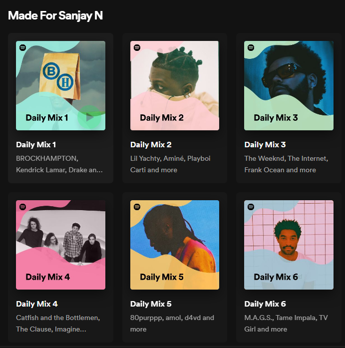

Concept albums can be of any genre, however it is usually a rock album featuring a cycle of songs expressing a particular theme or idea. Songs are usually meant to be listened to in a specific order, and each connects to the other in interesting ways. They are a definetely not the kind of music you listen to at random, but an album you specifically choose to play. It requires a certain amount of committment, something seldom seen in music, and I like it. 50 Best Concept Albums of all time: Rolling Stones
My spotify recommendations